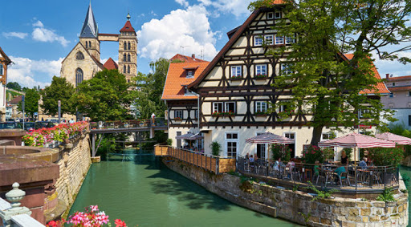
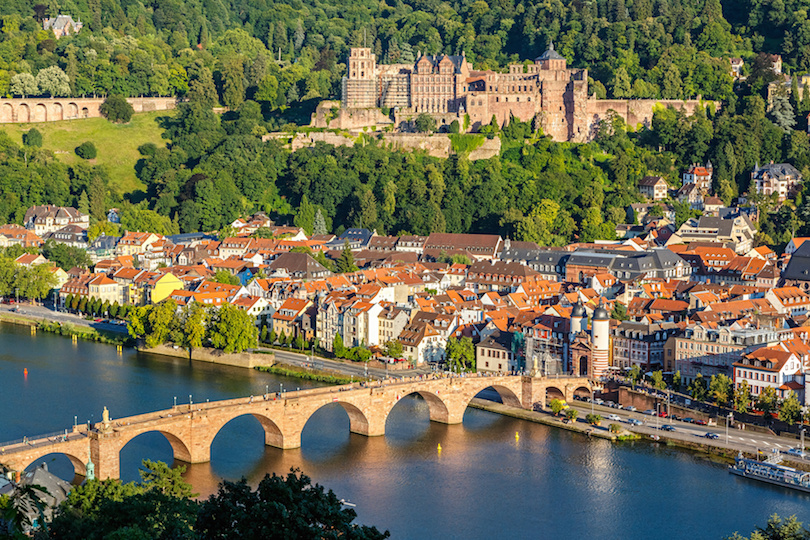
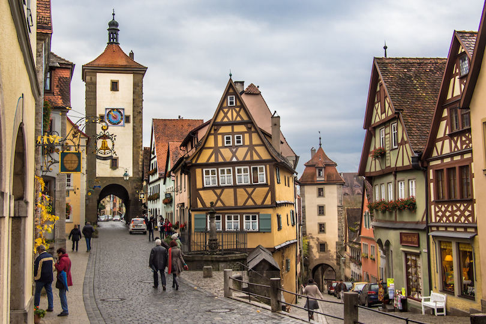
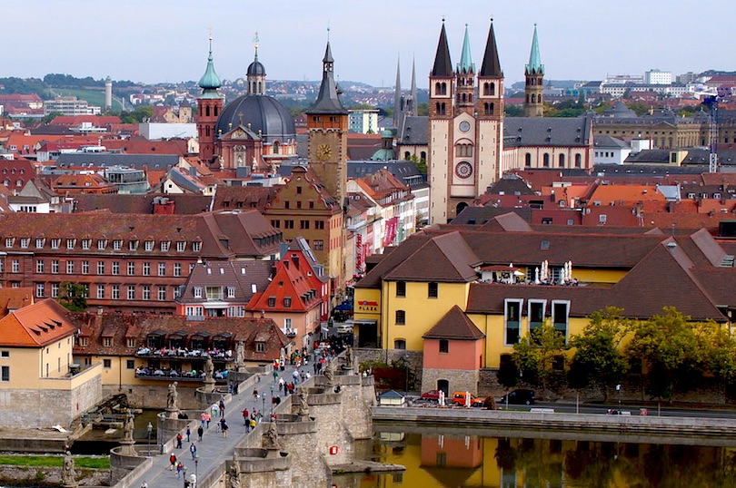
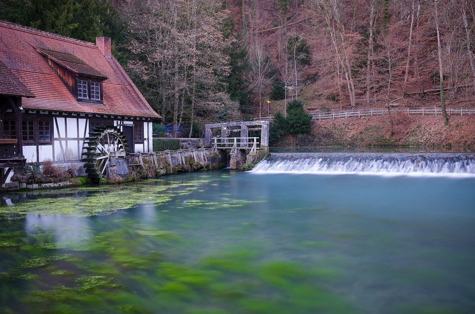
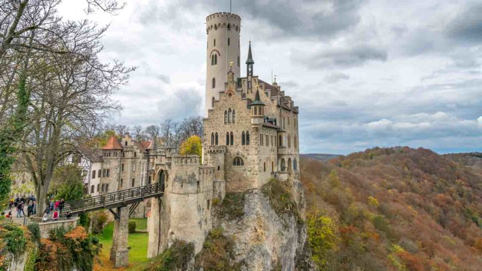
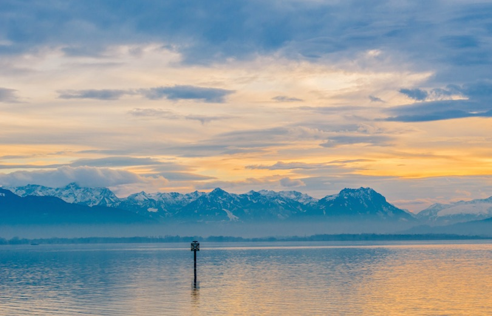
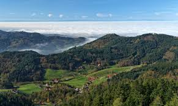

Stuttgart
Stuttgart is the capital and largest city of the German state of Baden-Württemberg. Stuttgart is located on the Neckar river in a fertile valley known locally as the "Stuttgart Cauldron". It lies an hour from the Swabian Jura and the Black Forest.
Heidelberg
With historic treasures like the medieval Old Bridge, the Heidelberg Castle, the Church of the Holy Spirit and the Knight St. George House, it is no wonder that Heidelberg is one of the top tourist destinations in Germany. The picturesque city suffered little damage during World War II, with its baroque town center remaining intact. Home to Germany’s oldest university, Heidelberg’s long academic history can be retraced along the Philosopher’s Walk, a scenic footpath often walked by many earlier philosophers and professors.
Frankfurt

Frankfurt (German: Frankfurt am Main) is the largest city in the German state of Hesse, and is considered the business and financial centre of Germany. It is the fifth largest city in Germany after Berlin, Hamburg, Munich and Cologne. The city is known for its modern skyline, and for hosting the headquarters of the European Central Bank, the Deutsche Börse stock exchange and numerous German financial services companies. Furthermore, it hosts some of the world's most important trade shows, such as the Frankfurt Auto Show and the Frankfurt Book Fair. Located on the river Main at a crossroad of the German Autobahn system and connected to several high-speed rail lines, with Germany's busiest airport on its outskirts, Frankfurt is one of the most important transportation hubs of Europe.
Rothenburg ob der Tauber
This town along the romantic road is best known for its medieval center dating from the 14th centuries. A history of European wars and world wars have left the number of undisturbed cities of ancient architecture very decimated, and this is one of the best remaining examples of the old Medieval style in Germany. The small town is only around 6,000 but it gets many tourists stopping through on bus trips along the Romantic road. Whether the visit is short or long, don’t miss market square with the Town Hall tower, the Medieval crime and punishment museum, or the triangular plaza of Plonlein. If there is time, a walk around the restored city wall is a great way to get some spectacular views and photos.
Wurzburg 
This Bavarian city was an important royal home for many centuries of prince-bishops. The Baroque palace, Wurzburger Residence, is one of Europe’s most ornate examples of this style of architecture, and has been considered one of the continent’s finest royal homes. Of special note are the fresco paintings and elaborate staircase inside the palace. Also of note in town is the church, which is one of Germany’s oldest, and built directly atop an eighth century pagan temple. Finally, some of the wineries here have been in business since Roman times. It is worth spending time on the property, or at least buying a bottle.
Blautopf, Blaubeuren
Forming the headwaters of the river Blau, the Blautopf arises from the Swabian Jura mountains
of southern Germany. Meaning “Blue Pot” in German, the spring’s dazzling color lends itself
easily to myth and fascination.
The Blautopf is actually one endpoint of a vast underground cave system in the area’s karst
landscape. Over millennia, erosion has dug an intricate and ever-growing network of tunnels
through the region’s soft limestone, creating a complex underground drainage system.
Any precipitation is quickly channeled into these caves, running down and through the natural
conduits until the aggregating pressure pushes the water back above ground somewhere. The
Blautopf is one such “somewhere,” a place where the water in the Blau cave system can drain out,
forming the Blau river and eventually flowing into the Danube. Richly saturated with limestone
nanoparticles by the time it returns to the surface, the water takes on its striking hue thanks
to Rayleigh scattering, which is the same phenomenon that makes the sky blue.
Liechtenstein Castle
Lichtenstein Castle(Schloss Lichtenstein) is a privately-owned Gothic Revival castle located in the Swabian Jura of southern Germany. It was designed by Carl Alexander Heideloff and its name means "shining stone" or "bright stone".The castle overlooks the Echaz valley near Honau, Reutlingen in the state of Baden-Württemberg. The modern castle was inspired by the novel Lichtenstein(1826) by Wilhelm Hauff and was built in 1840–1842. The ruins of an older medieval castle are a few hundred meters away.
Lake Constance
This glacial lake is one of Europe’s largest and sits along the border of the three nations of Germany, Austria and Switzerland. The lake is a great opportunity to see both historic and natural wonders. Beautiful mountain vistas, orchards, vineyards and wetlands are all easy to find along the Lake Constance (Bodensee in Germany), in addition to a number of castles and monasteries. Three different ferry routes are also available between the major cities on the lake, from Germany between Freidrichschafen and Konstanz or Romansburg in Switzerland, and between Konstanz and Meersburg. There is also a train route around the lake with stops at all of the points of interest.
Black Forest
The beautiful Black Forest with its dark, densely-wooded hills is one of the most visited upland regions in all of Europe. Situated in the southwestern corner of Germany and extending 160 kilometers from Pforzheim in the north to Waldshut on the High Rhine in the south, it's a hiker's heaven. On the west side, it descends steeply to the Rhine, crossed by lush valleys, while on the east, it slopes more gently down to the upper Neckar and Danube valleys. Popular spots include Germany's oldest ski area at Todtnau, the magnificent spa facilities of Baden-Baden, and the attractive resort of Bad Liebenzell. Other highlights include the spectacular Black Forest Railway centered on Triberg with its famous falls, and Triberg itself, home to the Black Forest Open Air Museum. The best way to catch them all? Grab a map of the Black Forest Panoramic Route, a 70-kilometer driving tour that takes in the very best views over the region, along with its top historic attractions, including stunning castles and numerous medieval towns and villages.